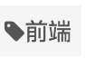

安裝 Node.JS
Hexo 是 node.js 的一個套件，所以使用 Hexo 前要先安裝 node.js
安裝 Hexo
使用npm安裝hexo1
npm install hexo-cli -g
初始化部落格1
2
3hexo init blog
cd blog
npm install
啟動網站，預設以localhost:4000啟動1
hexo server
安裝 Hexo Git
將hexo部署至github的套件1
2cd blog
npm install hexo-deployer-git --save
將Hexo部署至Github
新增一個新的儲存庫，名稱為 yourname.github.io
再來到 blog 資料夾，編輯網站設定文件(_config.yml)，開啟之後，拉到檔案最底部，可以看到1
2deploy:
type:
輸入以下資訊1
2
3
4deploy:
type: git
repository: https://github.com/boyilai/boyilai.github.io.git
branch: master
產生靜態文件並部署上 Github1
hexo g -d
再來就可以上 https://yourname.github.io/ 查看是否部署成功
使用Next主題
如何安裝主題，可參考官方教學文件
下載Next主題1
2cd blog
$ git clone https://github.com/iissnan/hexo-theme-next themes/next
編輯網站設定文件(_config.yml)，將theme設定為next1
theme: next
使用第三方服務
DISQUS評論系統
先至DISQUS新增欲使用服務的網站
再到Admin->Settings->Sites，找出shortname
最後編輯主題設定文件(themes/next/_config.yml)，將 disqus 下的 enable 設定為 true，同時提供 shortname。count 用於指定是否顯示評論數量。1
2
3
4disqus:
enable: true
shortname: your_shortname
count: true
Local Search搜索服務
文章摘要服務
使用hexo-excerpt (自動產生摘要的插件)
指令：1
npm install hexo-excerpt --save
使用hexo-excerpt的原因：
避免使用<!-- more -->手動截斷，省下審視版面的時間
不想使用auto_excerpt，不喜歡沒有截到一個段落結束的話，
在網站設定文件(_config.yml)中設定摘要要顯示多少個一級html標籤中的內容1
2#Excerpt
excerpt_depth: 5
Google分析閱讀量
客製化設定
讓NexT主題的Markdown H2自動產生底線
在主題的css中添加自訂CSS1
h2 { border-bottom: 1px solid #cccccc; }
添加前：
添加後：
讓NexT主題的List不只有圓形
在主題的css中將此行註解(大約在第55行)1
//ul li { list-style: circle; }
修改前：
修改後：
修改文章底部的那個#號的標籤
修改模板/themes/next/layout/_macro/post.swig1
2
3
4
5
6
7
8<footer class="post-footer">
{% if post.tags and post.tags.length and not is_index %}
<div class="post-tags">
{% for tag in post.tags %}
<a href="{{ url_for(tag.path) }}" rel="tag"># {{ tag.name }}</a>
{% endfor %}
</div>
{% endif %}
搜索rel="tag">#，將 # 換成<i class="fa fa-tag"></i>1
2
3
4
5
6
7
8<footer class="post-footer">
{% if post.tags and post.tags.length and not is_index %}
<div class="post-tags">
{% for tag in post.tags %}
<a href="{{ url_for(tag.path) }}" rel="tag"><i class="fa fa-tag"></i> {{ tag.name }}</a>
{% endfor %}
</div>
{% endif %}
修改後：

新增標籤頁
可以參考 Next 官網的這篇教學 添加「标签」页面。
新增分類頁
可以參考 Next 官網的這篇教學 添加「分类」页面
新增關於頁
可以這篇教學 Hexo about页面怎么写 Next关于页面怎么设置